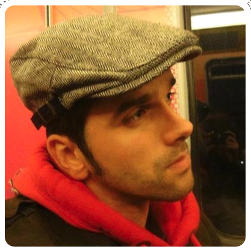
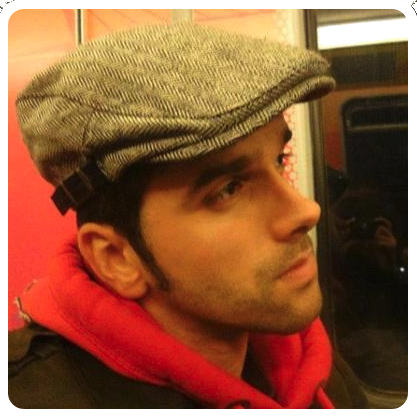

Since 2015 -- current, Senior Infrastructure Engineer @Giant Swarm GmbH. Giant Swarm is a microservice oriented startup that was present in the microservices ecosystem since the begining. Giant Swarm offers a microservice infrastructure where customers can easily deploy their applications, build their own clusters making use of our solutions for storage, networking, autoscaling, service discovery and fault tolerance. At Giant Swarm, I work as a remote core maintainer focusing on improving the stability, performance and scalability of our solutions. I also focused on the integration with third party tools like Calico, Flocker and Weave to be used and exposed to customers.
As part of my job, I gave several talks in international festivals (e.g. CoreOS Fest) but also in local meetups (e.g. Docker meetups).
From 2014 -- 2015, Senior Cloud Engineer @ElasticBox Inc. ElasticBox is a DevOps platform that streamlines the development, deployment, and management of multi-tier applications across cloud infrastructures. As a part of the Engineering team, I worked as a full Stack engineer on various advanced assignments, whose primary purpose was the design, development and management of a scalable and cloud-agnostic product for DevOps. Among all the features in which I was involved, I highlight the Docker integration into ElasticBox components, the development of multiple cross-cloud features such as storage management and resource tagging, migration of our Twisted reactor to a Tornado reactor and the autoscaling support for our vSphere provider.
Since 2012 -- 2014, Research Engineer @Vrije University of Amsterdam. The wide diversity of cloud-based applications and customers with different QoS requirements have recently exhibited the weaknesses of current provisioning systems. Within this position, I researched on auto-scaling techniques for cloud infrastructures from the perspective of web applications. Consequently, I designed and implemented a novel autoscaling system for a cloud platform called ConPaaS. Main features of these autoscaling system: a) short and medium term performance forecasting; b) scaling decision making; c) distributed monitoring and application metric specific; d) cloud agnostic; e) cost-awareness; f) multiple QoS levels adjusted to customer's requirements. As a result, several papers were published in distinct journals and conferences.
From 2006 -- 2009, Engineer @OpenFWPA, Software AG. Among candidates from several companies, I was selected to enroll the openFWPA team (an opensource J2EE fwk for e-government services) for the design and implementation of the openFWPA framework for the Government of Asturias. My main duties were focused on the development and design of J2EE backend modules that remain today as the foundation of this MVC struts-based framework. Majority of applications in the Government of Asturias are currently being developed and running on top of these modules.
From 2005 -- 2006, Developer @Software AG. After finishing my Computer Science degree, I decided to join Software AG to work as a Java developer. As a member of Software AG, I developed scalable and configurable applications that relied on the SOA model and used J2EE technologies to build e-government applications. Majority of tools used during this position were similar to those mentioned in the above position.